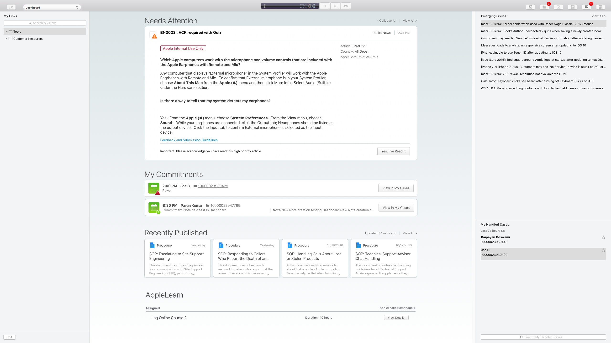

Scenario 1 of 7
You frequently refer customers to apple.com/batteries so they can learn more about managing their devices’ battery life. Where can you add this link so you can quickly open it later in Safari?
- My Links
- Needs Attention
- My Commitments
- Recently Published
- AppleLearn
- Emerging Issues
- My Handled Cases
